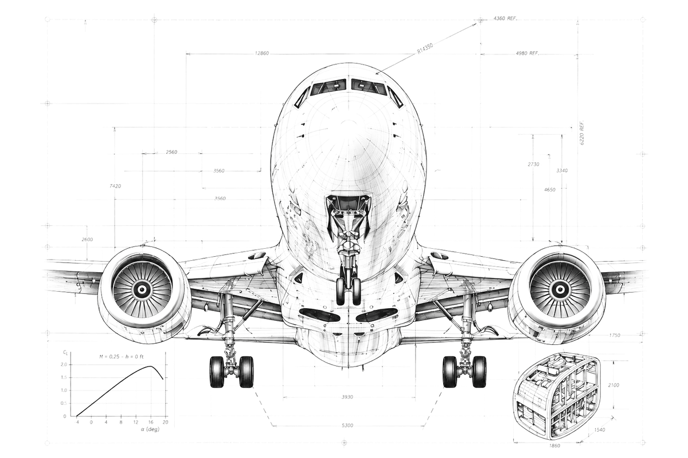

Archivio didattico · Esami di Stato
Dal volo al calcolo: le Costruzioni Aeronautiche
Tracce e svolgimenti commentati della seconda prova — opzione Costruzioni Aeronautiche — insieme a una biblioteca di monografie, guide di laboratorio ed esercizi svolti. Ogni materiale è autoconsistente: intuizione fisica, dimostrazione ed esempio numerico.
Archivio in aggiornamento

Nessun documento trovato
Prova con un altro termine o rimuovi i filtri attivi.
Archivio · 14 documenti
Archivio delle prove d'esame
Tracce e svolgimenti commentati delle sessioni d'esame, dalla più recente alle storiche. Impostazione metodologica, ipotesi motivate ed esempi numerici.
Tracce ufficiali · archivio auto-aggiornante
Prove ministeriali
Le tracce originali del Ministero, organizzate per anno scolastico. L'elenco si aggiorna da solo leggendo l'archivio del corso: scegli l'anno, poi la sessione, e scarica il PDF della prova.
Biblioteca · 41 tra monografie, guide ed esercizi
Materiali di supporto al corso
Monografie autoconsistenti e guide di laboratorio che accompagnano l’intero arco del corso: fondamenti, aerodinamica, meccanica del volo, strutture, propulsione, impianti e normativa. Le raccolte applicative sono ora riunite nella sezione autonoma «Esercizi».
Slide di lezione · 12 documenti
Le slide del corso
Le presentazioni proiettate in aula, ordinate secondo la programmazione annuale di Dipartimento: per ciascun anno le Unità di Apprendimento nella sequenza in cui vengono effettivamente svolte. Le slide non sostituiscono le monografie — sono la traccia della lezione, con i passaggi essenziali e le figure; lo sviluppo completo e gli esercizi stanno nel materiale collegato.
Terzo anno
3ª classe · 165 h · 8 UdA
7 slide
L'anno in cui si costruisce il linguaggio: vettori, momenti e reazioni vincolari, poi l'atmosfera tipo internazionale, la sostentazione statica e quella dinamica, fino all'ala finita e alla polare del velivolo. Comprende 26 ore di laboratorio computazionale in Python distribuite sull'intero anno.
- UdA 1 · Fondamenti vettoriali
- UdA 2 · Architettura del velivolo
- UdA 3 · Unità di misura, atmosfera ISA e sostentazione statica
- UdA 4 · Dinamica dei fluidi e sostentazione dinamica
- UdA 5 · L'ala finita
- UdA 6 · Materiali e tecnologie
- UdA 7 · Strumenti di pilotaggio e navigazione
- UdA 8 · Laboratorio: Python
Le altre slide sono in preparazione. Oltre alla lezione introduttiva, le presentazioni di questo anno saranno pubblicate progressivamente, seguendo l'ordine delle UdA. Nel frattempo il materiale di studio è nelle sezioni «Materiali di supporto al corso» ed «Esercizi svolti e schemi metodologici».
Quarto anno
4ª classe · 165 h · 8 UdA
3 slide
L'anno dei sistemi e dei carichi: si apre sull'ipersostentazione e sul volo a bassa velocità, attraversa il comprimibile, l'elica e l'ala rotante, e si chiude sull'inviluppo di volo e sul dimensionamento delle strutture. Comprende 22 ore di laboratorio con XFLR5 e Python.
- UdA 1 · L'ipersostentazione
- UdA 2 · Il volo supersonico
- UdA 3 · Le eliche
- UdA 4 · Accoppiamento elica–velivolo
- UdA 5 · Gli elicotteri
- UdA 6 · Carichi e inviluppo di volo
- UdA 7 · Struttura del velivolo e dimensionamenti
- UdA 8 · Laboratorio: XFLR5 e Python
Quinto anno
5ª classe · 264 h · 8 UdA
2 slide
L'anno dell'Esame di Stato: meccanica del volo completa, il modulo strutturale con le esercitazioni canoniche ES.1–ES.8, centraggio e stabilità, impianti di bordo, corrosione e normativa. Comprende 42 ore di laboratorio fra aerodinamica numerica e uso verificato degli strumenti di IA.
- UdA 1 · Volo librato e volo livellato
- UdA 2 · Moti curvi, decollo, atterraggio, autonomie
- UdA 3 · Progetto di strutture (ES.1–ES.8)
- UdA 4 · Centraggio, controllo e stabilità
- UdA 5 · Impianti di bordo
- UdA 6 · Fenomeni di corrosione
- UdA 7 · Normativa e manutenzione
- UdA 8 · Laboratorio: IA e aerodinamica numerica
Le altre slide sono in preparazione. Oltre alla lezione inaugurale, le presentazioni di questo anno saranno pubblicate progressivamente, seguendo l'ordine delle UdA. Per la preparazione alla seconda prova sono già disponibili l'archivio delle prove d'esame e le raccolte di esercizi svolti.
Raccolte applicative · 16 documenti
Esercizi svolti e schemi metodologici
Raccolte autoconsistenti, esercizi risolti passo passo e schemi operativi per consolidare i metodi di calcolo del corso, dai fondamenti alla meccanica del volo e alle strutture.
Oltre il programma · 7 monografie
Approfondimenti
Monografie di approfondimento avanzato, che vanno oltre il programma di base dell'istituto tecnico. I fascicoli di taglio universitario del corso di Fluidodinamica — per l'inquadramento del terzo anno si parte da «Il linguaggio dell'aerodinamica» — si affiancano qui agli approfondimenti monografici su singoli temi del programma di Costruzioni, trattati con un'ampiezza che l'ora di lezione non consente.
Documenti originali · 7 fonti
Fonti storiche originali
I lavori che hanno fondato l'aerodinamica e le costruzioni aeronautiche moderne, nei loro testi originali — tutti di pubblico dominio (rapporti NACA/NASA: Work of the US Gov.). Leggerli in originale è il modo migliore per capire da dove vengono le formule che studiamo a lezione.
Nota per lo studente. Il portale NTRS della NASA offre due indirizzi per ogni rapporto: la scheda (con abstract e riferimenti, il link più stabile) e il PDF a scaricamento diretto. Se un PDF non si aprisse, apri la scheda e cerca «Available Downloads». I rapporti NACA elencati sono liberamente riproducibili (Public Use Permitted): citali sempre con autore, titolo e numero di report.
Note · licenza d'uso
Licenza & note
Licenza d'uso dei materiali
Salvo ove diversamente indicato, i materiali pubblicati in questa sezione sono concessi in licenza Creative Commons Attribuzione – Non commerciale – Non opere derivate 4.0 Internazionale (CC BY-NC-ND 4.0).
È consentita la consultazione e la condivisione dei materiali esclusivamente con citazione dell'autore, senza modifiche e per finalità non commerciali.
Autore: Prof. Ing. Biagio Raucci · Licenza: CC BY-NC-ND 4.0
Nota metodologica
I materiali pubblicati hanno finalità esclusivamente didattica. Le soluzioni e gli schemi proposti offrono un supporto allo studio, al ripasso e alla comprensione del metodo risolutivo. In presenza di più approcci corretti, viene privilegiato quello più chiaro, ordinato e coerente con l'impostazione tipica della disciplina.